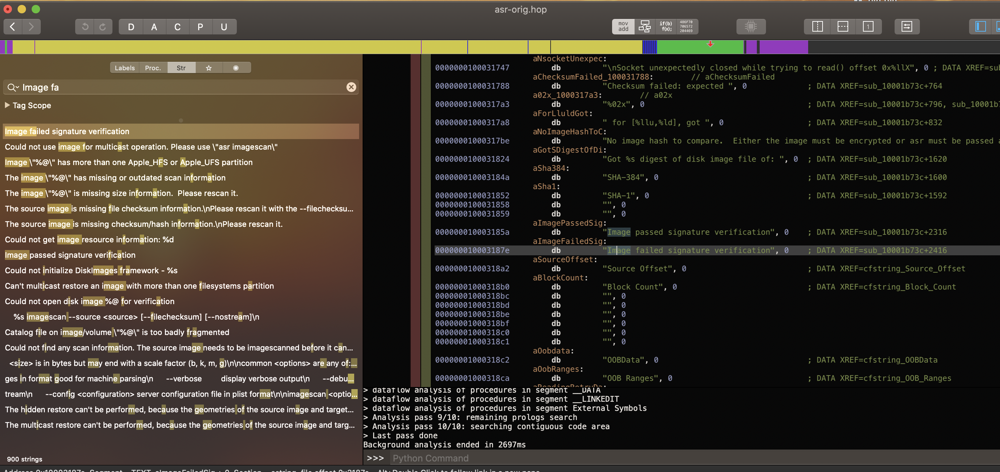
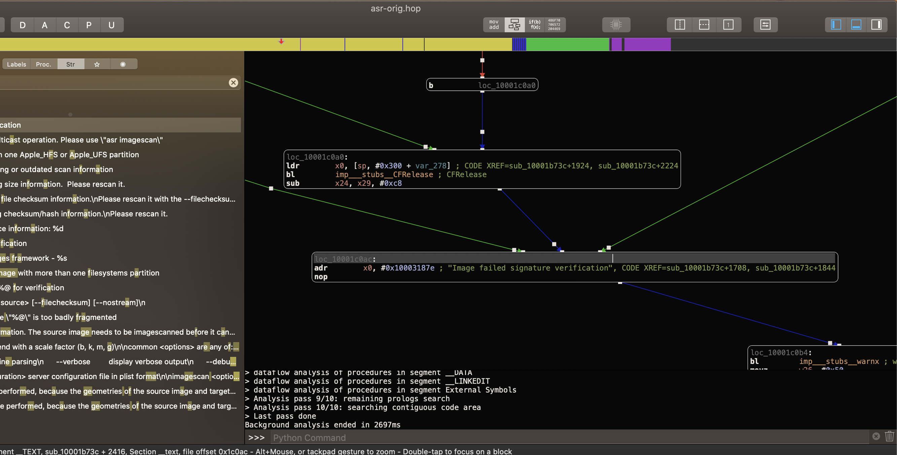
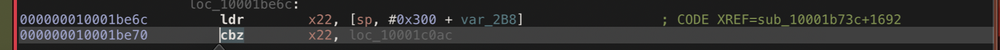
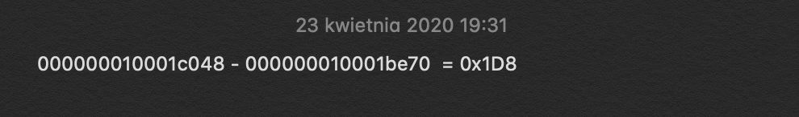
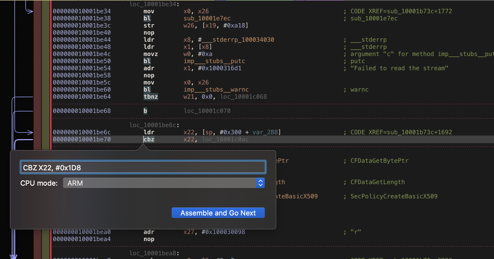
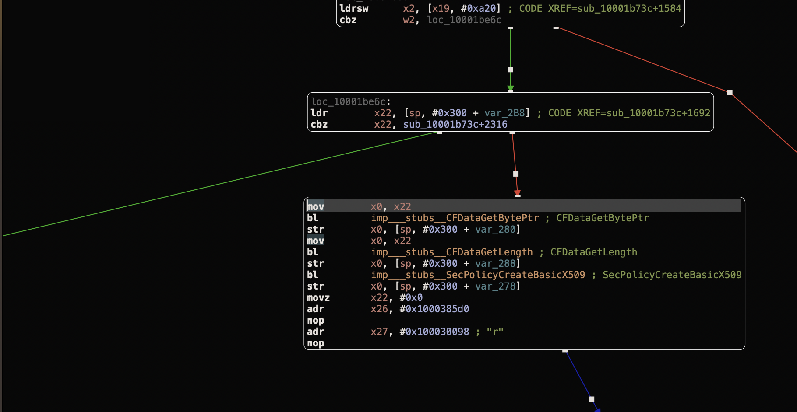
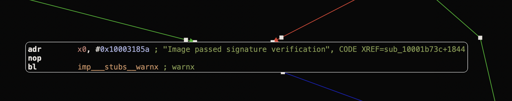

Patching iBEC/iBSS
Big disclaimer here: I haven't got opportunity of testing this guide myself cause all my workspace is stuck in different city for quarantine time, ughh. It worked back then but now on my second mac I struggle with weird SEP error, other people confirmed me that this guide worked for them though. Be careful, I do not take any responsibility for any device bricked, bootlooped, burned. It's rather safe, but you know, just in case...
First thing you need to do in order to boot unsigned firmware without previously saved blobs is obviously patch iOS bootchain. For more in-depth information how all process works I recommend you watching Tihmstar's talk from 33c3: Downgrading iOS from past to present In short, what we are interested in is: Bootrom -> iBSS -> iBEC -> Kernel
First goes iBSS and iBEC:
- Decrypting iBSS:
img4tool -e --iv "paste iv here, you can find correct online" --key "paste key here" -o iBSS.raw copiediBSS.im4p - Decrypting iBSS:
img4tool -e --iv "paste iv here" --key "paste key here" -o iBEC copiediBEC.im4p
In next step we patch it using Tihmstar's iBoot64Patcher:
- Patch iBSS:
iBoot64Patcher iBSS.raw iBSS.prepatched - Patch iBEC:
iBoot64Patcher iBEC.raw iBEC.prepatchedIf your interested in how those patches work, reading source code of iBoot64patcher and liboffsetfinder64 is definetly worth your time
Now and later you will need SHSH ticket, let's save it:
- Saving SHSH ticket :
./tsschecker -d iPhone6,2 -e youreicd -m BuildManifest_iPhone6,2_1033_OTA.plist -smv *.shsh ./ticket.shsh
Now we will have to repack it back to img4: If you want to know more about those formats, again go watch Tihmstar's talk, or if you don't have 50 minutes, just read artice on theiphonewiki
- Creating iBSS im4p with type ibss:
img4tool -c iBSS.im4p -t ibss iBSS.prepatched - Creating iBEC im4p with type ibec:
img4tool -c iBEC.im4p -t ibec iBEC.prepatched - Creating iBSS img4 and using ticket as IM4M:
img4tool -c iBSS.img4 -p iBSS.im4p -s "ticket.shsh" - Creating iBEC img4 and using ticket as IM4M:
img4tool -c iBEC.img4 -p iBEC.im4p -s "ticket.shsh"
Replace original iBSS and iBEC indide unpacked IPSW folder:
- Replacing iBSS:
cp -v iBSS.img4 ../iPhone_4.0_64bit_10.1.1_14B100_Restore/Firmware/dfu/iBSS.n53.RELEASE.im4p - Replacing iBEC:
cp -v iBEC.img4 ../iPhone_4.0_64bit_10.1.1_14B100_Restore/Firmware/dfu/iBEC.n53.RELEASE.im4p
Huge thank's to:
- @exploit3dguy for helping me figure out issues whenever I was stuck, without you writing this wouldn't be possible.
- @benfxmth and @rA9_baris for your hints
- @axi0mx for checkm8 exploit
- @LinusHenze for ipwndfu fork
- @nyan_satan for original 32 bit guide and fixkeybag
- @tihmstar for iBoot64Patcher, liboffsetfinder64, futurerestore and ra1nsn0w
- @xerub for img4lib
- @Ralph0045 and @mcg29_ for their dualboot guide
- @mosk_i for his fork of futurerestore and ra1nsn0w
Patch ASR
What we are insterested in now is patching ASR. Iphonewiki says that asr "works by writing the rootfs image to the actual system drive (ASR RESTORE), then checksums it. (ASR VERIFY)". So now our task is to patch it.
First thing we're goint ot do is extract ASR from restore ramdisk, check the name of restore ramdisk for your device and correct version on iphonewiki:
-
Decrypting ramdisk:
./img4 -i pathToRestoreRamdisk PathToSaveDecryptedRamdisk -
Double click at ramdisk to monunt it and copy asr from /usr/sbin/ to your working location. Patching asr was the first think where I had to think for a little longer, although there may be different ways for solving this puzzle, this is the way that worked for me: Everything done in hopper, but IDA should work in simmilar way
-
Find string "Image failed" and reference to it 
-
We see 3 lines, the that we are insterested in is the third one. Follow it to where it's comming from.
-
Change the view to see it's addres.
-
We need to calculate the difference between adress of this instruction and adress of function "Image passed" string 
-
Now all we need to do is modify the original instuction with our modified one and save new binary.
-
You can confirm that everything is correct by following green line.   It's time to put binary back, let's resize ramdisk a little bit to make it fit.
-
Resizing ramdisk:
hdiutil resize -size 50m ./rd.dmgNow for the sake of god we need to resign new binary with original entitlements: -
Extract original entitlements:
ldid2 -e ASR > asr.xml -
Replace original binary with patched one and sign it back:
ldid2 -S -ASR.xml asr
Patch AMFI
Disclaimer: I know that there was kernel64patcher released, I just haven't time to test it yet so I'll update this guide when I confirm it's working
To apply necessary kernelpatches you can easily use ra1nsn0w to make all work for you. I plan dive deeply in given patches in next post somewhere in near future to explain how exactly they work.
For this part I recommend you following this guide of @Ralph0045 and @mcg29_. They made really great job and I could learn many things from their guide!
Alternatively you can do It as I did it:
- Download and install matthew's fork of ra1nsn0w
- put your device in dfu mode:
ipwndfu -p - remove sigchecks:
python2.7 rmsigchks.py - start wikiproxy if needed:
wikiproxy.py - run following command to get your kernel patched:
ra1nsn0w -t *.shsh2 /path/to/your/restore.ipsw --kernel-save ./kern.dump --sn0wsn0w
Later you need to change type of dumped kernel from krnl to rkrn:
- Changing type:
img4 -i kern.dump -o rkrn.patched -T rkrnPut it back to ipsw folder and replace original one with this.
What was also hinted by rA9 is to create folder called restore inside IPSW and put kernelcache inside. Then in BuildManifest.plist edit patch of RestoreKernelCache to "restore/kernel.release.correctnumberhere"
Restore
Restoration process is simple:
- Put device in dfu and remove sigchecks
- Pass iBSS:
irecovery -f iBSS - Pass iBEC:
irecovery -f iBEC
Now you can do actuall restore, I used the same futurerestore that Matthew has used in Vieux - it has sigchecks disabled:
- restore:
futurerestore -t *.shsh -s path/to/sep -m aliteks10.3.3otamanifest -b path/to/baseband -p aliteks10.3.3otamanifest /path/to/restore.ipsw
Boot
When done you can simply boot it with ra1nsn0w, I know you can do it without my help ;)
Additionally you can play with boot images, here's some clues:
- Create raw image from png:
./ibootim logo.png logo.raw - Create im4p with type logo and give it some description - I gave it the same as original:
img4tool -c applelogo.im4p -t logo -d "EmbeddedImages-73.220.6" logo.raw - Create img4 with previously created im4p and as im4m use your fake blob:
img4tool -p applelogo.im4p -c img.img4 -s ticker.shsh2 - Send it to device:
irecovery -f img.4 - Set it:
irecovery -c "setpicture 1"